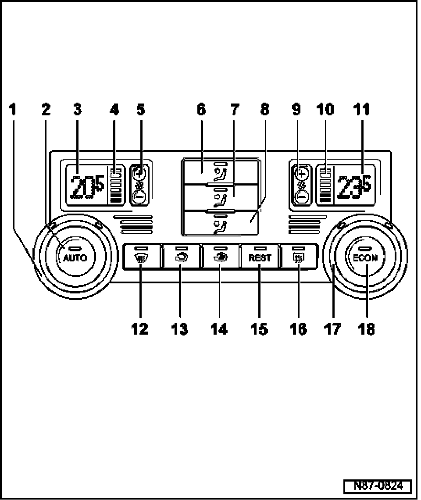

Dual-Zone Climatronic, A/C Control Head Display and Functions
Dual-Zone Climatronic, A/C Control Head Display & Functions

1. Left temperature regulator
- Rotate to increase or decrease left front passenger compartment temperature setting.
2. Automatic operation button
- In automatic mode the Climatronic maintains the selected interior temperature automatically. With this setting the vent air temperature, the blower speed and the air distribution are controlled automatically.
3. Left selected temperature display
- Units can be changed from degree Celsius to degree Fahrenheit and vice versa.
Procedures
4. Left blower speed display
- In automatic operation, the actual blower speed is displayed.
5. Left blower speed selection button
6. Upper air distribution button
7. Center air distribution button
8. Footwell air distribution button
9. Right blower speed selection button
10. Right blower speed display
- In automatic operation the actual blower speed is displayed.
11. Right selected temperature display
- Units can be changed from degree Celsius to degree Fahrenheit and vice versa.
12. Windshield defrost button
13. Air recirculation button
- Press to recirculate interior air when outside air quality is poor.
14. Automatic air recirculation button
- Press to automatically recirculate interior air when outside air quality is poor.
NOTE:
Recirculating air is switched on automatically under the following conditions:
- When reverse gear is selected.
- When the windshield washer system is operated.
- When Sensor for air quality -G238- is activated.
15. Residual heat function button
- When residual heat function is switched on the residual heat of engine is pumped through the heater core.
16. Rear defroster button
17. Right temperature regulator
- Rotate to increase or decrease right front passenger compartment temperature setting.
18. "ECON" button
- Press button to switch air conditioning (cooling) on and off.
- In ECON mode the compressor is regulated to minimum cooling output. Heating and A/C operation continues to be controlled automatically.